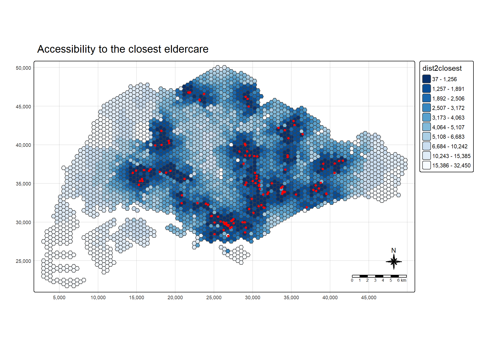
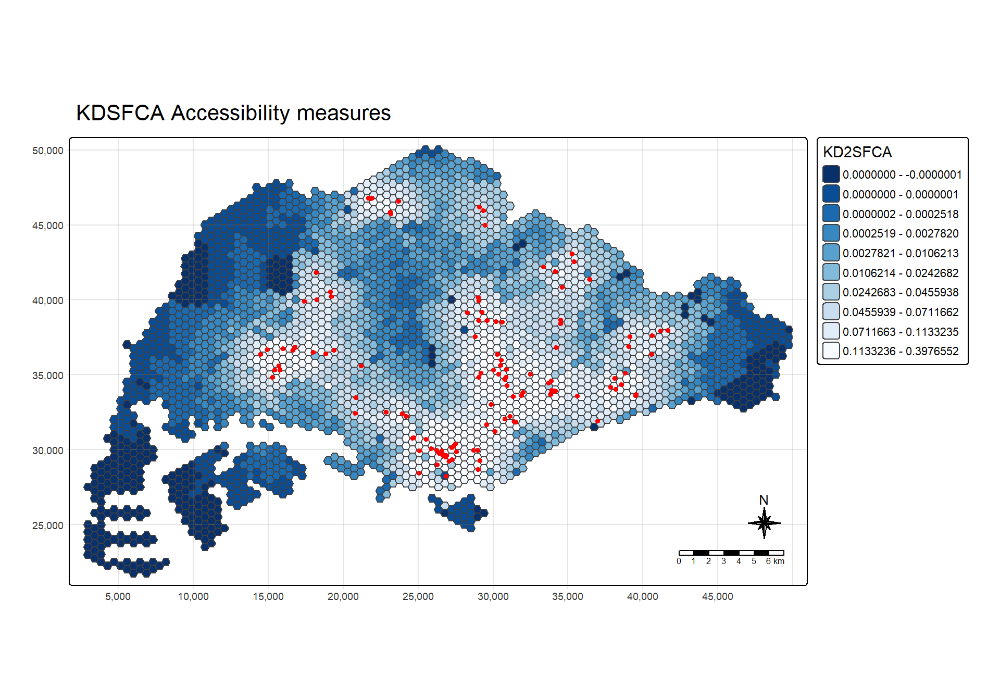
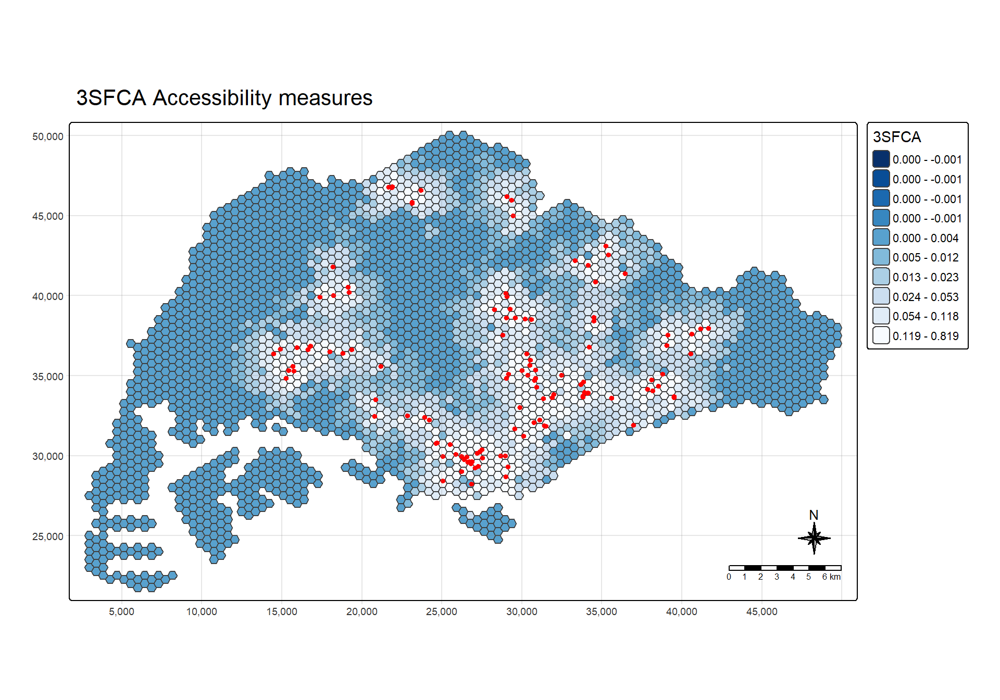
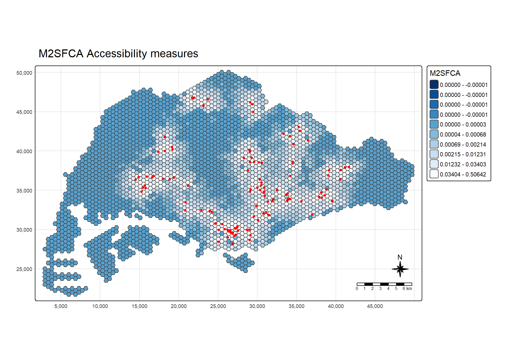

if (!requireNamespace("catchment", quietly = TRUE)) {
remotes::install_github("uva-bi-sdad/catchment")
}
library(catchment)In-class_Ex07
Loading R package
Installment catchment R package
pacman::p_load(sf, tidyverse, tmap, accessibility, catchment)Importing Geospatial data
mpsz <- st_read(dsn = "data/geospatial",
layer = "MP14_SUBZONE_NO_SEA_PL") %>%
st_transform(crs = 3414)Reading layer `MP14_SUBZONE_NO_SEA_PL' from data source
`D:\1.Abinav\1.SMU\Term 4\Geospatial Analysis\Abinav0905\GAA-Abinav-Test\In_Class_Ex\In_Class_Ex07\data\geospatial'
using driver `ESRI Shapefile'
Simple feature collection with 323 features and 15 fields
Geometry type: MULTIPOLYGON
Dimension: XY
Bounding box: xmin: 2667.538 ymin: 15748.72 xmax: 56396.44 ymax: 50256.33
Projected CRS: SVY21hexagons <- st_read(dsn = "data/geospatial",
layer = "hexagons") %>%
st_transform(crs = 3414)Reading layer `hexagons' from data source
`D:\1.Abinav\1.SMU\Term 4\Geospatial Analysis\Abinav0905\GAA-Abinav-Test\In_Class_Ex\In_Class_Ex07\data\geospatial'
using driver `ESRI Shapefile'
Simple feature collection with 3125 features and 6 fields
Geometry type: POLYGON
Dimension: XY
Bounding box: xmin: 2667.538 ymin: 21506.33 xmax: 50010.26 ymax: 50256.33
Projected CRS: SVY21 / Singapore TMeldercare <- st_read(dsn = "data/geospatial",
layer = "ELDERCARE") %>%
st_transform(crs = 3414)Reading layer `ELDERCARE' from data source
`D:\1.Abinav\1.SMU\Term 4\Geospatial Analysis\Abinav0905\GAA-Abinav-Test\In_Class_Ex\In_Class_Ex07\data\geospatial'
using driver `ESRI Shapefile'
Simple feature collection with 120 features and 19 fields
Geometry type: POINT
Dimension: XY
Bounding box: xmin: 14481.92 ymin: 28218.43 xmax: 41665.14 ymax: 46804.9
Projected CRS: SVY21 / Singapore TMODMatrix <- read_csv("data/aspatial/OD_Matrix.csv", skip = 0)Geospatial Preparation
hexagons <- hexagons %>%
select(fid) %>%
mutate(demand = 100) %>%
rename(id = fid)eldercare <- eldercare %>%
select(fid) %>%
mutate(capacity = 100)ODMatrix_tidied <- ODMatrix %>%
select(origin_id, destination_id, total_cost) %>%
rename(from_id = origin_id,
to_id = destination_id,
dist = total_cost)Computing Minimum Travel Distance to nearest oldercare
dist2closest <- cost_to_closest(
travel_matrix = ODMatrix_tidied,
land_use_data = hexagons,
opportunity = "demand",
travel_cost = "dist",
n = 1,
group_by = character(0),
active = TRUE,
fill_missing_ids = TRUE
)Joining output
hex_acc <- hexagons %>%
left_join(dist2closest) %>%
rename(dist2closest = dist)Mapping closest distance
mapex <- st_bbox(hex_acc)
tm_shape(hex_acc,
bbox = mapex) +
tm_polygons(fill = "dist2closest",
fill.scale = tm_scale_intervals(
style = "quantile",
n = 10,
values = "-brewer.blues")) +
tm_shape(eldercare) +
tm_dots(size = 0.3,
fill = "red",
col = "black") +
tm_title("Accessibility to the closest eldercare") +
tm_layout(frame = TRUE) +
tm_compass(type="8star", size = 2) +
tm_scalebar() +
tm_grid(alpha = 0.2)
Converting ODMatrix data frame in a matrix
distmat <- ODMatrix %>%
select(origin_id, destination_id, total_cost) %>%
spread(destination_id, total_cost) %>%
select(c(-c('origin_id')))
distmat_km <- as.matrix(distmat/1000)Two-Step Floating Catchment Area
df_2sfca <- catchment_ratio(
consumers = hexagons$demand,
providers = eldercare$capacity,
cost = distmat_km,
max_cost = 5) %>%
as.data.frame() %>%
rename("2SFCA" = ".")Mapping 2SFCA
hex_2SFCA <- bind_cols(hexagons, df_2sfca)
tm_shape(hex_2SFCA,
bbox = mapex) +
tm_polygons(fill = "2SFCA",
fill.scale = tm_scale_intervals(
style = "quantile",
n = 10,
values = "-brewer.blues")) +
tm_shape(eldercare) +
tm_dots(size = 0.3,
fill = "red",
col = "black") +
tm_title("2SFCA Accessibility measures") +
tm_layout(frame = TRUE) +
tm_compass(type="8star", size = 2) +
tm_scalebar() +
tm_grid(alpha = 0.2)
Enhanced 2-Step Floating Catchment
step_weights <- list(c(5, .01), c(4, .05), c(3, .1), c(2, .4), c(1, 1))
df_e2sfca <- catchment_ratio(
consumers = hexagons$demand,
providers = eldercare$capacity,
cost = distmat_km,
weight = step_weights) %>%
as.data.frame() %>%
rename("E2SFCA" = ".")Mapping E2SFCA
hex_E2SFCA <- bind_cols(hexagons, df_e2sfca)
tm_shape(hex_E2SFCA,
bbox = mapex) +
tm_polygons(fill = "E2SFCA",
fill.scale = tm_scale_intervals(
style = "quantile",
n = 10,
values = "-brewer.blues")) +
tm_shape(eldercare) +
tm_dots(size = 0.3,
fill = "red",
col = "black") +
tm_title("E2SFCA Accessibility measures") +
tm_layout(frame = TRUE) +
tm_compass(type="8star", size = 2) +
tm_scalebar() +
tm_grid(alpha = 0.2)Kernel Density (Guassian) 2-Step Floating Catchment Area
df_kd2sfca <- catchment_ratio(
consumers = hexagons$demand,
providers = eldercare$capacity,
cost = distmat_km,
weight = "gaussian") %>%
as.data.frame() %>%
rename("KD2SFCA" = ".")Mapping KD2SFCA
hex_KD2SFCA <- bind_cols(hexagons, df_kd2sfca)
tm_shape(hex_KD2SFCA,
bbox = mapex) +
tm_polygons(fill = "KD2SFCA",
fill.scale = tm_scale_intervals(
style = "quantile",
n = 10,
values = "-brewer.blues")) +
tm_shape(eldercare) +
tm_dots(size = 0.3,
fill = "red",
col = "black") +
tm_title("KDSFCA Accessibility measures") +
tm_layout(frame = TRUE) +
tm_compass(type="8star", size = 2) +
tm_scalebar() +
tm_grid(alpha = 0.2)
3-Step Floating Catchment Area
df_3sfca <- catchment_ratio(
consumers = hexagons$demand,
providers = eldercare$capacity,
cost = distmat_km,
step_weights,
normalize_weight = TRUE) %>%
as.data.frame() %>%
rename("3SFCA" = ".")hex_3SFCA <- bind_cols(hexagons, df_3sfca)
tm_shape(hex_3SFCA,
bbox = mapex) +
tm_polygons(fill = "3SFCA",
fill.scale = tm_scale_intervals(
style = "quantile",
n = 10,
values = "-brewer.blues")) +
tm_shape(eldercare) +
tm_dots(size = 0.3,
fill = "red",
col = "black") +
tm_title("3SFCA Accessibility measures") +
tm_layout(frame = TRUE) +
tm_compass(type="8star", size = 2) +
tm_scalebar() +
tm_grid(alpha = 0.2)
Modified 2-Step Floating Catchment Area
df_m2sfca <- catchment_ratio(
consumers = hexagons$demand,
providers = eldercare$capacity,
cost = distmat_km,
step_weights,
adjust_providers = function(w) w^2) %>%
as.data.frame() %>%
rename("M2SFCA" = ".")hex_M2SFCA <- bind_cols(hexagons, df_m2sfca)
tm_shape(hex_M2SFCA,
bbox = mapex) +
tm_polygons(fill = "M2SFCA",
fill.scale = tm_scale_intervals(
style = "quantile",
n = 10,
values = "-brewer.blues")) +
tm_shape(eldercare) +
tm_dots(size = 0.3,
fill = "red",
col = "black") +
tm_title("M2SFCA Accessibility measures") +
tm_layout(frame = TRUE) +
tm_compass(type="8star", size = 2) +
tm_scalebar() +
tm_grid(alpha = 0.2)